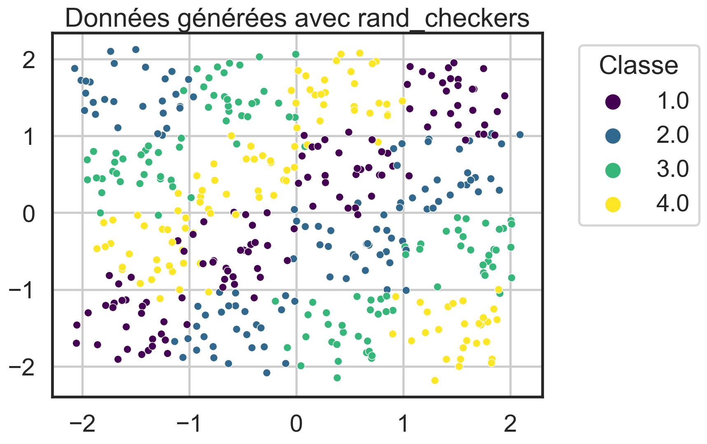
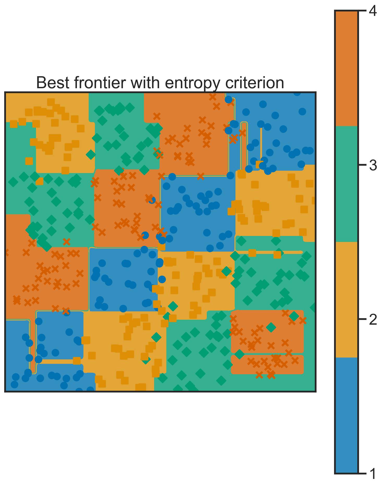
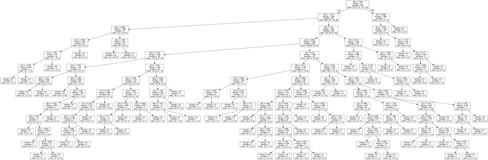
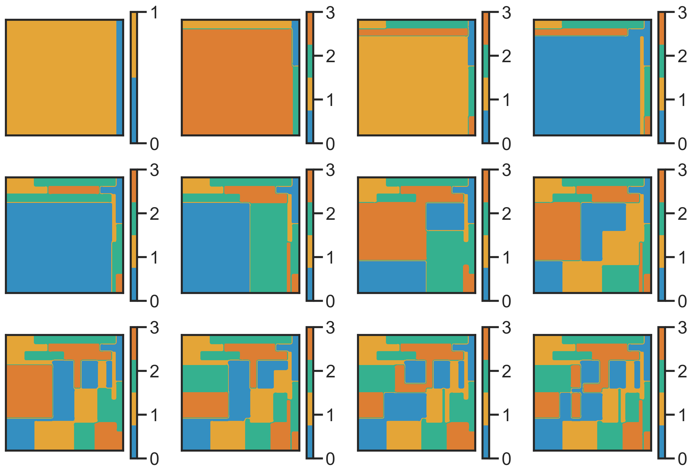
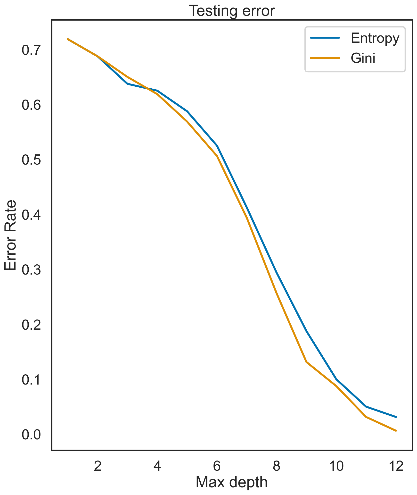
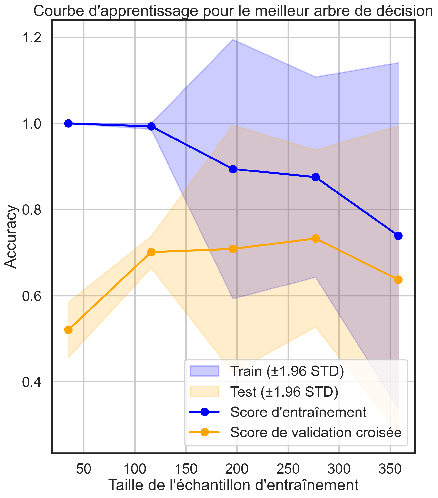

Dans le cadre de la régression on peux utiliser la variance comme mesure d’homogénéité.Car la variance quantifie la dispersion des valeurs de la variable cible (Y) autour de leur moyenne.
Si la variance est élevée : alors les valeurs de Y sont dispersées sur une plage plus large ce qui indique une hétérogénéité élevée entre les données.
Si la variance est faible : alors les valeurs de Y sont regroupées plus étroitement autour de leur moyenne ce qui indique une homogénéité plus élevée entre les données.
Question 2
Avec scikit-learn on peut créer des arbres de décision en utilisant la classe tree DecisionTreeClassifier.
Pour la première simulation on génére un échantillon équilibré de taille \(n = 456\) avec la fonction rand_checkers. en veillant à maintenir un équilibre entre les classes.
Code
# Tracer les données générées à partir de rand_checkersplt.figure(figsize=(8, 6))data[:, 2] +=1scatter = sns.scatterplot(x=data[:, 0], y=data[:, 1], hue=data[:, 2], palette="viridis", s=50)plt.title("Données générées avec rand_checkers")scatter.legend(title="Classe", bbox_to_anchor=(1.05, 1), loc='upper left')plt.grid(True)plt.show()

On partitionne ensuite en 2 sous-ensembles pour avoir un ensemble d’entrainement et un ensemble de test.
Code
X_train = data[:, :2]Y_train = data[:, 2].astype(int)dt_entropy = tree.DecisionTreeClassifier(criterion='entropy')dt_gini = tree.DecisionTreeClassifier(criterion='gini')#calcule les performances du score sur les données d'apprentissagedt_gini.fit(X_train, Y_train)dt_entropy.fit(X_train, Y_train)train_error_gini =1- dt_gini.score(X_train, Y_train)train_error_entropy =1- dt_entropy.score(X_train, Y_train)print("L'erreur avec le critère de Gini est :", train_error_gini)print("L'erreur avec le critère d'entropie est :",train_error_entropy)
L'erreur avec le critère de Gini est : 0.0
L'erreur avec le critère d'entropie est : 0.0
Un résultat d’erreur de classification de 0 signifie que le modèle a correctement classé toutes les observations dans l’ensemble d’entraînement ce qui est excellent en termes de performance de classification.
Les erreurs des critères d’entropie et de Gini diminuent à mesure que la profondeur maximale de l’arbre augmente ce qui suggère une amélioration de la performance du modèle avec une complexité croissante.
Le choix de la profondeur optimale est crucial pour l’équilibre entre adaptation aux données et généralisation. une amélioration de la performance du modèle avec une complexité croissante.
Question 3
Code
np.random.seed(1234)# Créer un arbre de décision avec la meilleure profondeur pour l'entropiebest_tree_entropy = tree.DecisionTreeClassifier( criterion="entropy", random_state=0)best_tree_entropy.fit(X_train, Y_train)# Afficher la classification obtenue avec la profondeur optimale (Entropy)plt.figure(figsize=(8, 8))plt.figure()frontiere(lambda x: dt_entropy.predict(x.reshape((1, -1))),X_train,Y_train, step=100, samples=True) plt.title("Best frontier with entropy criterion")plt.draw()print("Best scores with entropy criterion: ", dt_entropy.score(X_train, Y_train))
Best scores with entropy criterion: 0.9977678571428571
<Figure size 768x768 with 0 Axes>

Nous allons maintenant illustrer la classification obtenue en utilisant la profondeur d’arbre qui minimise les erreurs basées sur l’entropie, en utilisant la frontiere() du fichier source. Nous avons observé que pour une profondeur de 12, l’erreur est nulle, ce qui signifie que le modèle atteint un score parfait de 1 (score = 1 - erreur). Cette classification précise met en évidence l’efficacité de l’arbre de décision dans l’apprentissage des données.
Question 4
Nous allons exploiter la fonction export_graphviz() du module tree pour générer un graphique représentant l’arbre résultant de la question précédente. Ce graphique sera sauvegardé sous le nom “arbre.png” dans le répertoire “Plots” du dépôt Git de ce TP.
Un arbre de décision est une structure simple composée d’un nœud racine suivi de deux nœuds enfants. Chaque nœud non-terminal a également deux nœuds enfants, et finalement, nous atteignons les nœuds terminaux qui contiennent les décisions. Si une condition au nœud k est vraie, nous suivons la branche de gauche ; sinon, nous suivons celle de droite.

Question 5
Évaluons maintenant la précision de notre arbre en calculant son taux d’erreur sur un nouvel échantillon de 160 données générées avec rand_checkers.
Code
np.random.seed(1)new_data = rand_checkers(n1=40, n2=40, n3=40, n4=40, sigma=0.1)X_new = new_data[:, :2]Y_new = new_data[:, 2].astype(int)error_rate_entropy =1- best_tree_entropy.score(X_new, Y_new)best_tree_gini = tree.DecisionTreeClassifier(criterion="gini", random_state=0)best_tree_gini.fit(X_new, Y_new)error_rate_gini =1- best_tree_gini.score(X_new, Y_new)print("Proportion d'erreurs sur le nouvel échantillon (Entropy): {:.2f}%".format(error_rate_entropy *100))print("Proportion d'erreurs sur le nouvel échantillon (Gini): {:.2f}%".format(error_rate_gini *100))dmax =12scores_entropy = np.zeros(dmax)scores_gini = np.zeros(dmax)plt.figure(figsize=(15, 10))for i inrange(dmax):# Créer un arbre de décision avec une profondeur maximale variable (entropy) dt_entropy = tree.DecisionTreeClassifier(criterion="entropy", max_depth=i +1) dt_entropy.fit(X_new, Y_new) scores_entropy[i] =1- dt_entropy.score(X_new, Y_new) dt_gini = tree.DecisionTreeClassifier(criterion="gini", max_depth = i +1) dt_gini.fit(X_new, Y_new) scores_gini[i] =1- dt_gini.score(X_new, Y_new) plt.subplot(3, 4, i +1) frontiere(lambda x: dt_gini.predict(x.reshape((1, -1))), X_new, Y_new, step=50, samples=False)plt.figure()plt.plot(range(1, dmax +1), scores_entropy, label="Entropy")plt.plot(range(1, dmax +1), scores_gini, label="Gini")plt.xlabel('Max depth')plt.ylabel('Error Rate')plt.title("Testing error")plt.legend()plt.show()print("Proportion d'erreurs sur le nouvel échantillon (Entropy): {:.2f}%".format(error_rate_entropy *100))print("Proportion d'erreurs sur le nouvel échantillon (Gini): {:.2f}%".format(error_rate_gini *100))
Proportion d'erreurs sur le nouvel échantillon (Entropy): 96.88%
Proportion d'erreurs sur le nouvel échantillon (Gini): 0.00%
Proportion d'erreurs sur le nouvel échantillon (Entropy): 96.88%
Proportion d'erreurs sur le nouvel échantillon (Gini): 0.00%


L’erreur diminue jusqu’à atteindre zéro confirmant nos observations initiales. Passons maintenant à l’évaluation sur les données de test, qui est notre principal objectif. Avec une profondeur maximale initiale, nous observons que l’erreur diminue et atteint un plateau. Cette stabilisation intervient à une profondeur d’environ. Ainsi, pour ce jeu de données, il n’est pas nécessaire d’opter pour une profondeur très élevée pour obtenir de meilleures performances.
Question 7
Nous allons utiliser la fonction sklearn.cross_validation.cross_val_score() pour évaluer ses performances sur le jeu de données digits en ajustant la profondeur de l’arbre de décision de manière variée. Cette fonction sera utile pour déterminer la profondeur optimale de l’arbre.
La meilleure valeur pour la profondeur est \(8\) pour cette graine là.
Question 8
Dans cette étape, nous allons créer des courbes d’apprentissage en faisant varier la taille de l’ensemble d’entraînement. Ces courbes nous fourniront des scores pour différentes tailles d’ensemble. De plus, nous inclurons les “intervalles de confiance”, qui représentent la dispersion des scores obtenus lors de la validation croisée.
Code
dt = tree.DecisionTreeClassifier(criterion='entropy', max_depth=best_depth)n_samples, train_scores, test_scores = learning_curve(dt, X_train, Y_train, cv=5)train_scores_mean = np.mean(train_scores, axis=1)train_scores_std = np.std(train_scores, axis=1)test_scores_mean = np.mean(test_scores, axis=1)test_scores_std = np.std(test_scores, axis=1)# Tracer la courbe d'apprentissage avec un style personnaliséplt.figure()plt.grid()plt.fill_between(n_samples, train_scores_mean -1.96* train_scores_std, train_scores_mean +1.96* train_scores_std, alpha=0.2, color='blue', label="Train (±1.96 STD)")plt.fill_between(n_samples, test_scores_mean -1.96* test_scores_std, test_scores_mean +1.96* test_scores_std, alpha=0.2, color='orange', label="Test (±1.96 STD)")plt.plot(n_samples, train_scores_mean, 'o-', color='blue', label="Score d'entraînement")plt.plot(n_samples, test_scores_mean, 'o-', color='orange', label="Score de validation croisée")plt.legend(loc="lower right")plt.xlabel("Taille de l'échantillon d'entraînement")plt.ylabel("Accuracy")plt.title("Courbe d'apprentissage pour le meilleur arbre de décision")plt.show()

Source Code
---title: "TP2 - arbres de décision"title-block-banner: trueformat: html: code-fold: true code-tools: true theme: mintytoc: truetoc-depth: 3toc-title: "Sommaire"author: - name: Hamza Slama---## Classification avec les arbres <aname="Classification avec les arbres"></a>### Question 1 <a name="Question 1"></a>Dans le cadre de la régression on peux utiliser la variance comme mesure d'homogénéité.Car la variance quantifie la dispersion des valeurs de la variable cible (Y) autour de leur moyenne.Si la variance est élevée : alors les valeurs de Y sont dispersées sur une plage plus large ce qui indique une hétérogénéité élevée entre les données.Si la variance est faible : alors les valeurs de Y sont regroupées plus étroitement autour de leur moyenne ce qui indique une homogénéité plus élevée entre les données.### Question 2 <a name="Question 2"></a>Avec `scikit-learn` on peut créer des arbres de décision en utilisant la classe tree DecisionTreeClassifier.Pour la première simulation on génére un échantillon équilibré de taille $n = 456$ avec la fonction `rand_checkers`. en veillant à maintenir un équilibre entre les classes.```{python}#| echo: falseimport pandas as pdimport osimport numpy as npimport matplotlib.pyplot as pltimport seaborn as snsfrom matplotlib import rcimport syssys.path.append('./Code/')from tp_arbres_source import*from sklearn import tree, datasets, model_selectionfrom sklearn.model_selection import cross_val_score, learning_curve # Simulation de l'échantillonn =456data = rand_checkers(n1=n//4, n2=n//4, n3=n//4, n4=n//4)# Configuration des paramètres de base de matplotlibplt.rc('font', family='sans-serif')plt.rc('font', serif=['Computer Modern Roman'])plt.rc('axes', labelsize=6)plt.rc('font', size=12)plt.rc('legend', fontsize=12)plt.rc('text', usetex=False)plt.rc('figure', figsize=(10, 12))# Configuration de seabornsns.set_context("poster")sns.set_palette("colorblind")sns.set_style("white")``````{python}# Tracer les données générées à partir de rand_checkersplt.figure(figsize=(8, 6))data[:, 2] +=1scatter = sns.scatterplot(x=data[:, 0], y=data[:, 1], hue=data[:, 2], palette="viridis", s=50)plt.title("Données générées avec rand_checkers")scatter.legend(title="Classe", bbox_to_anchor=(1.05, 1), loc='upper left')plt.grid(True)plt.show()```On partitionne ensuite en 2 sous-ensembles pour avoir un ensemble d'entrainement et un ensemble de test. ```{python}X_train = data[:, :2]Y_train = data[:, 2].astype(int)dt_entropy = tree.DecisionTreeClassifier(criterion='entropy')dt_gini = tree.DecisionTreeClassifier(criterion='gini')#calcule les performances du score sur les données d'apprentissagedt_gini.fit(X_train, Y_train)dt_entropy.fit(X_train, Y_train)train_error_gini =1- dt_gini.score(X_train, Y_train)train_error_entropy =1- dt_entropy.score(X_train, Y_train)print("L'erreur avec le critère de Gini est :", train_error_gini)print("L'erreur avec le critère d'entropie est :",train_error_entropy)```Un résultat d'erreur de classification de 0 signifie que le modèle a correctement classé toutes les observations dans l'ensemble d'entraînement ce qui est excellent en termes de performance de classification.```{python}#| echo: FALSEnp.random.seed(678)dmax =12scores_entropy = np.zeros(dmax)scores_gini = np.zeros(dmax)error_data = {'Max Depth': [], 'Error (Entropy)': [], 'Error (Gini)': []}plt.figure(figsize=(15, 10))for i inrange(dmax): dt_entropy = tree.DecisionTreeClassifier(criterion='entropy', max_depth=i+1) dt_entropy.fit(X_train, Y_train) scores_entropy[i] =1- dt_entropy.score(X_train, Y_train) dt_gini = tree.DecisionTreeClassifier(criterion='gini', max_depth=i+1) dt_gini.fit(X_train, Y_train) scores_gini[i] =1- dt_gini.score(X_train, Y_train) plt.subplot(3, 4, i +1) frontiere(lambda x: dt_gini.predict(x.reshape((1, -1))), X_train, Y_train, step=50, samples=False) error_data['Max Depth'].append(i+1) error_data['Error (Entropy)'].append(scores_entropy[i]) error_data['Error (Gini)'].append(scores_gini[i])plt.draw()plt.figure()plt.plot(range(1, dmax +1), scores_entropy, label='entropy')plt.plot(range(1, dmax +1), scores_gini, label='gini')plt.xlabel('Max depth')plt.ylabel('Error')plt.title('Error with entropy and gini criterion')plt.legend()plt.draw()# Créer un DataFrame à partir des données d'erreurerror_df = pd.DataFrame(error_data)print(error_df)```Les erreurs des critères d'entropie et de Gini diminuent à mesure que la profondeur maximale de l'arbre augmente ce qui suggère une amélioration de la performance du modèle avec une complexité croissante.Le choix de la profondeur optimale est crucial pour l'équilibre entre adaptation aux données et généralisation. une amélioration de la performance du modèle avec une complexité croissante.### Question 3 <a name="Question 3"></a>```{python}np.random.seed(1234)# Créer un arbre de décision avec la meilleure profondeur pour l'entropiebest_tree_entropy = tree.DecisionTreeClassifier( criterion="entropy", random_state=0)best_tree_entropy.fit(X_train, Y_train)# Afficher la classification obtenue avec la profondeur optimale (Entropy)plt.figure(figsize=(8, 8))plt.figure()frontiere(lambda x: dt_entropy.predict(x.reshape((1, -1))),X_train,Y_train, step=100, samples=True) plt.title("Best frontier with entropy criterion")plt.draw()print("Best scores with entropy criterion: ", dt_entropy.score(X_train, Y_train))```Nous allons maintenant illustrer la classification obtenue en utilisant la profondeur d'arbre qui minimise les erreurs basées sur l'entropie, en utilisant la frontiere() du fichier source. Nous avons observé que pour une profondeur de 12, l'erreur est nulle, ce qui signifie que le modèle atteint un score parfait de 1 (score = 1 - erreur). Cette classification précise met en évidence l'efficacité de l'arbre de décision dans l'apprentissage des données.### Question 4 <a name="Question 4"></a>Nous allons exploiter la fonction export_graphviz() du module tree pour générer un graphique représentant l'arbre résultant de la question précédente. Ce graphique sera sauvegardé sous le nom "arbre.png" dans le répertoire "Plots" du dépôt Git de ce TP.```{python}"""#| eval: FALSE#| echo: FALSEdot_data = tree.export_graphviz(dt_entropy, out_file=None)graph = graphviz.Source(dot_data)graph.render("./Plots/arbre", format='png')"""```Un arbre de décision est une structure simple composée d'un nœud racine suivi de deux nœuds enfants. Chaque nœud non-terminal a également deux nœuds enfants, et finalement, nous atteignons les nœuds terminaux qui contiennent les décisions. Si une condition au nœud k est vraie, nous suivons la branche de gauche ; sinon, nous suivons celle de droite.<imgsrc='./Plots/arbre.png'width=800>### Question 5 <a name="Question 5"></a>Évaluons maintenant la précision de notre arbre en calculant son taux d'erreur sur un nouvel échantillon de 160 données générées avec `rand_checkers`.```{python}#| message: FALSEnp.random.seed(1)new_data = rand_checkers(n1=40, n2=40, n3=40, n4=40, sigma=0.1)X_new = new_data[:, :2]Y_new = new_data[:, 2].astype(int)error_rate_entropy =1- best_tree_entropy.score(X_new, Y_new)best_tree_gini = tree.DecisionTreeClassifier(criterion="gini", random_state=0)best_tree_gini.fit(X_new, Y_new)error_rate_gini =1- best_tree_gini.score(X_new, Y_new)print("Proportion d'erreurs sur le nouvel échantillon (Entropy): {:.2f}%".format(error_rate_entropy *100))print("Proportion d'erreurs sur le nouvel échantillon (Gini): {:.2f}%".format(error_rate_gini *100))dmax =12scores_entropy = np.zeros(dmax)scores_gini = np.zeros(dmax)plt.figure(figsize=(15, 10))for i inrange(dmax):# Créer un arbre de décision avec une profondeur maximale variable (entropy) dt_entropy = tree.DecisionTreeClassifier(criterion="entropy", max_depth=i +1) dt_entropy.fit(X_new, Y_new) scores_entropy[i] =1- dt_entropy.score(X_new, Y_new) dt_gini = tree.DecisionTreeClassifier(criterion="gini", max_depth = i +1) dt_gini.fit(X_new, Y_new) scores_gini[i] =1- dt_gini.score(X_new, Y_new) plt.subplot(3, 4, i +1) frontiere(lambda x: dt_gini.predict(x.reshape((1, -1))), X_new, Y_new, step=50, samples=False)plt.figure()plt.plot(range(1, dmax +1), scores_entropy, label="Entropy")plt.plot(range(1, dmax +1), scores_gini, label="Gini")plt.xlabel('Max depth')plt.ylabel('Error Rate')plt.title("Testing error")plt.legend()plt.show()print("Proportion d'erreurs sur le nouvel échantillon (Entropy): {:.2f}%".format(error_rate_entropy *100))print("Proportion d'erreurs sur le nouvel échantillon (Gini): {:.2f}%".format(error_rate_gini *100))```L'erreur diminue jusqu'à atteindre zéro confirmant nos observations initiales. Passons maintenant à l'évaluation sur les données de test, qui est notre principal objectif. Avec une profondeur maximale initiale, nous observons que l'erreur diminue et atteint un plateau. Cette stabilisation intervient à une profondeur d'environ. Ainsi, pour ce jeu de données, il n'est pas nécessaire d'opter pour une profondeur très élevée pour obtenir de meilleures performances.### Question 7 <a name="Question 7"></a>Nous allons utiliser la fonction sklearn.cross_validation.cross_val_score() pour évaluer ses performances sur le jeu de données digits en ajustant la profondeur de l’arbre de décision de manière variée. Cette fonction sera utile pour déterminer la profondeur optimale de l’arbre.```{python}np.random.seed(12)from sklearn.datasets import load_digitsdigits = load_digits()error_ent = []error_gini = []dmax =12X = digits.datay = digits.targetfor i inrange(dmax): dt_entropy = tree.DecisionTreeClassifier(criterion='entropy', max_depth=i +1) accuracy = cross_val_score(dt_entropy, X, y, cv=10) error_ent.append(1-accuracy.mean()) dt_gini = tree.DecisionTreeClassifier(criterion='gini', max_depth=i +1) accuracy2 = cross_val_score(dt_gini, X, y, cv=10) error_gini.append(1-accuracy2.mean())plt.figure(figsize=(7, 4))plt.plot(error_ent, label="entropy")plt.plot(error_gini, label="gini")plt.xlabel('Depth')plt.ylabel("Error")plt.legend()plt.title("Error with entropy and gini criterion")plt.show()print(error_ent)print(error_gini)best_depth = np.argmin(error_ent) +1print(best_depth)```La meilleure valeur pour la profondeur est $8$ pour cette graine là.### Question 8 <a name="Question 8"></a>Dans cette étape, nous allons créer des courbes d'apprentissage en faisant varier la taille de l'ensemble d'entraînement. Ces courbes nous fourniront des scores pour différentes tailles d'ensemble. De plus, nous inclurons les "intervalles de confiance", qui représentent la dispersion des scores obtenus lors de la validation croisée.```{python}dt = tree.DecisionTreeClassifier(criterion='entropy', max_depth=best_depth)n_samples, train_scores, test_scores = learning_curve(dt, X_train, Y_train, cv=5)train_scores_mean = np.mean(train_scores, axis=1)train_scores_std = np.std(train_scores, axis=1)test_scores_mean = np.mean(test_scores, axis=1)test_scores_std = np.std(test_scores, axis=1)# Tracer la courbe d'apprentissage avec un style personnaliséplt.figure()plt.grid()plt.fill_between(n_samples, train_scores_mean -1.96* train_scores_std, train_scores_mean +1.96* train_scores_std, alpha=0.2, color='blue', label="Train (±1.96 STD)")plt.fill_between(n_samples, test_scores_mean -1.96* test_scores_std, test_scores_mean +1.96* test_scores_std, alpha=0.2, color='orange', label="Test (±1.96 STD)")plt.plot(n_samples, train_scores_mean, 'o-', color='blue', label="Score d'entraînement")plt.plot(n_samples, test_scores_mean, 'o-', color='orange', label="Score de validation croisée")plt.legend(loc="lower right")plt.xlabel("Taille de l'échantillon d'entraînement")plt.ylabel("Accuracy")plt.title("Courbe d'apprentissage pour le meilleur arbre de décision")plt.show()```